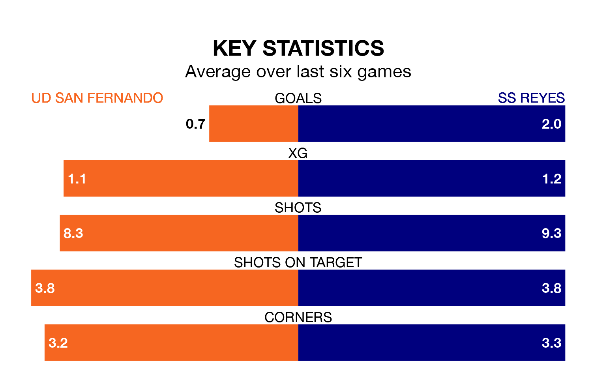

Mid-season relegation candidates UD San Fernando face a challenge against high-flying SS Reyes on Sunday.
UD San Fernando are 15th in the Segunda División RFEF Group 5 table, and have picked up five wins and three draws in their 18 games to date.
SS Reyes, meanwhile, are second in the standings with 31 points, having won eight and drawn seven, and are one point behind table-toppers CD Numancia.
With 14 goals in 18 games so far this season, San Fernando are the league's lowest scorers with 0.8 goals per game. And they are conceding more than average, letting in 24 goals at a rate of 1.3 per game.
SS Reyes, meanwhile, are above average scorers, with 1.4 goals per game, compared to a league average of 1.1. They have conceded 0.7 goals per game.
The hosts are in mixed form in Segunda División RFEF Group 5, with three wins and three losses from their last six games.
With four wins and a draw over that period, the away side's form is better – they have taken 13 points from 18, compared to San Fernando's nine.
San Fernando's last match was on January 14, a 1-0 loss against CD Mensajero.
SS Reyes beat Guadalajara 2-1 last time out, also on January 14.
Updated: 14:53 (UTC), 16/01/24